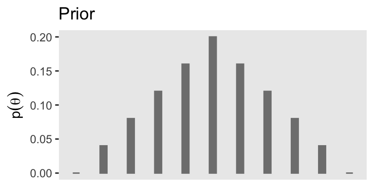
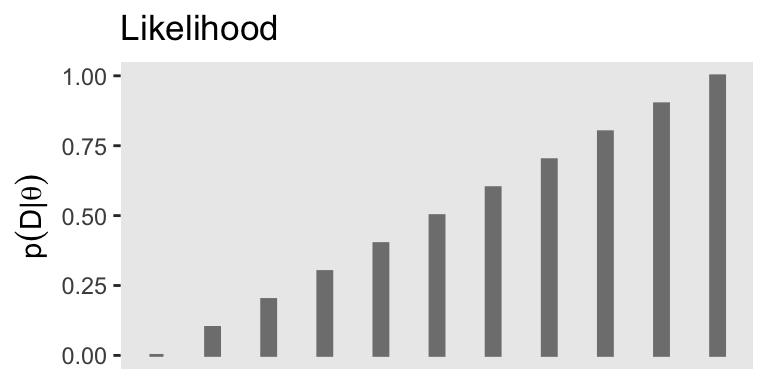
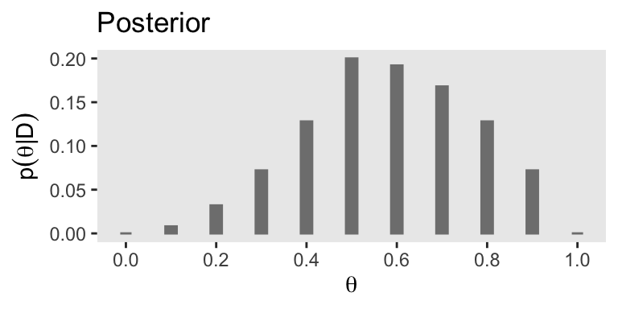
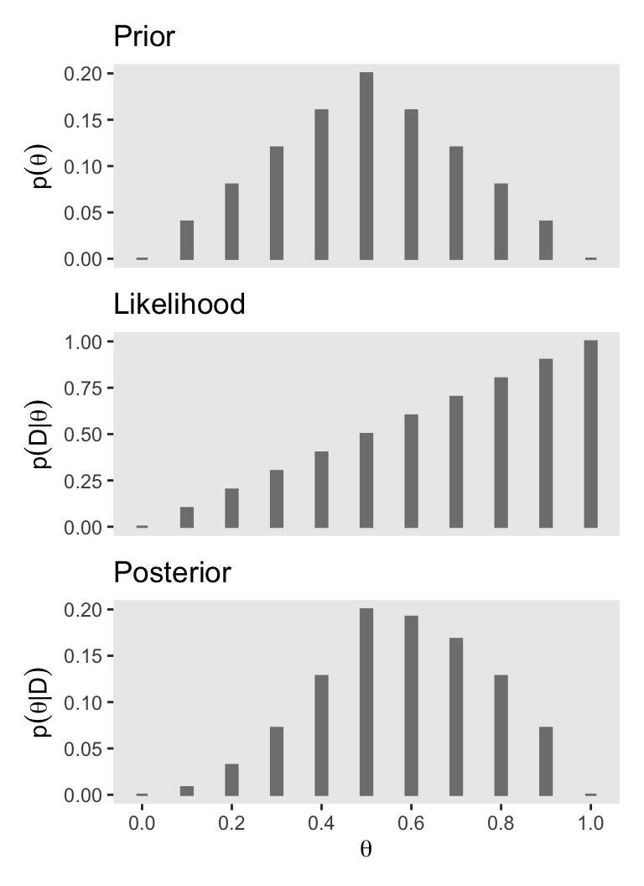
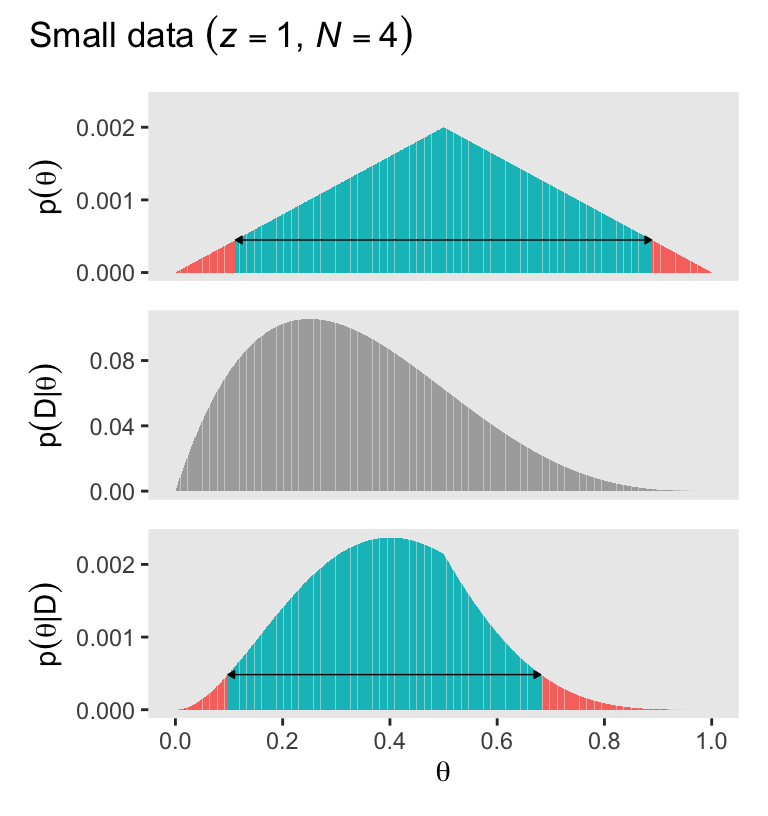
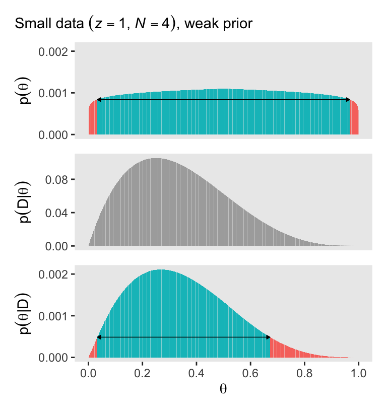
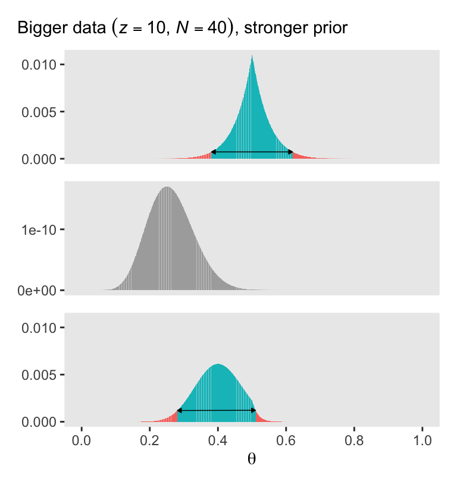
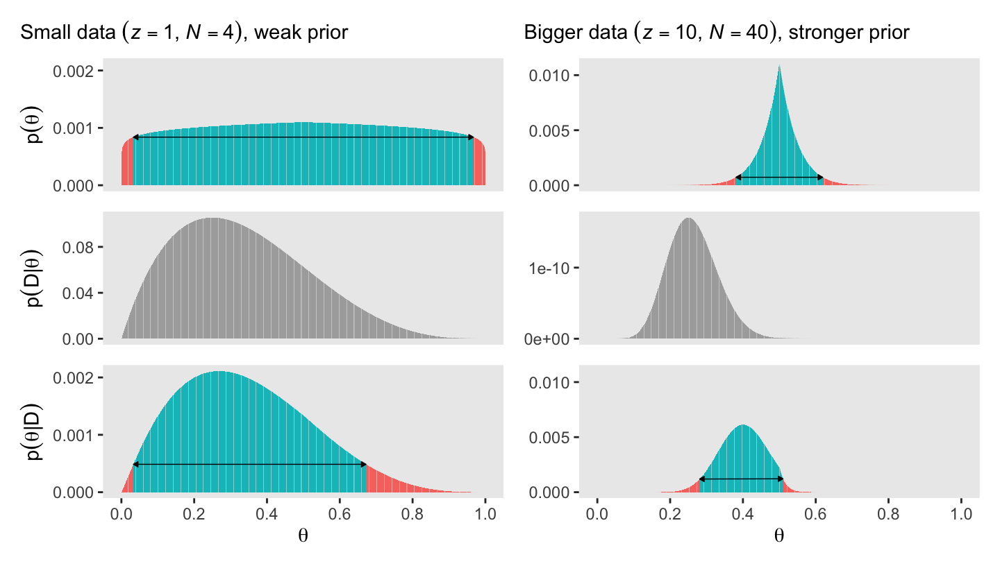

library(tidyverse)
library(janitor)
library(patchwork)5 Bayes’ Rule
“Bayes’ rule is merely the mathematical relation between the prior allocation of credibility and the posterior reallocation of credibility conditional on data” (Kruschke, 2015, pp. 99–100).
5.1 Bayes’ rule
Thomas Bayes (1702–1761) was a mathematician and Presbyterian minister in England. His famous theorem was published posthumously in 1763, thanks to the extensive editorial efforts of his friend, Richard Price (Bayes, 1763). The simple rule has vast ramifications for statistical inference, and therefore as long as his name is attached to the rule, we’ll continue to see his name in textbooks. But Bayes himself probably was not fully aware of these ramifications, and many historians argue that it is Bayes’ successor, Pierre-Simon Laplace (1749–1827), whose name should really label this type of analysis, because it was Laplace who independently rediscovered and extensively developed the methods (e.g., Dale, 2012; McGrayne, 2011). (p. 100)
I do recommend checking out McGrayne’s book It’s an easy and entertaining read. For a sneak preview, why not listen to her discuss the main themes she covered in the book?
5.1.1 Derived from definitions of conditional probability
With Equations 5.5 and 5.6, Kruschke gave us Bayes’ rule in terms of \(c\) and \(r\). Equation 5.5 was
\[p(c \mid r) = \frac{p(r \mid c) \; p(c)}{p(r)}.\]
Since \(p(r) = \sum_{c^*}p(r \mid c^*)p(c^*)\), we can re-express that as Equation 5.6:
\[p(c|r) = \frac{p(r \mid c) \; p(c)}{\sum_{c^*}p(r \mid c^*) \; p(c^*)},\]
where \(c^*\) “in the denominator is a variable that takes on all possible values” of \(c\) (p. 101).
5.1.2 Bayes’ rule intuited from a two-way discrete table
Load the primary packages for the chapter.
Revisit the HairEyeColor data from Section 4.4.
d <- read_csv("data.R/HairEyeColor.csv") |>
mutate(Hair = if_else(Hair == "Brown", "Brunette", Hair) |>
factor(levels = c("Black", "Brunette", "Red", "Blond")),
Eye = factor(Eye, levels = c("Brown", "Blue", "Hazel", "Green")))
glimpse(d)Rows: 16
Columns: 3
$ Hair <fct> Black, Black, Black, Black, Blond, Blond, Blond, Blond, Brunette, Brunette, Brunette, Brunette, Red, Red, Red, Red
$ Eye <fct> Blue, Brown, Green, Hazel, Blue, Brown, Green, Hazel, Blue, Brown, Green, Hazel, Blue, Brown, Green, Hazel
$ Count <dbl> 20, 68, 5, 15, 94, 7, 16, 10, 84, 119, 29, 54, 17, 26, 14, 14Remake the table of proportions by Eye and Hair.
d <- d |>
uncount(weights = Count, .remove = F) |>
tabyl(Eye, Hair) |>
adorn_totals(c("row", "col")) |>
data.frame() |>
mutate_if(is.double, .funs = ~ . / 592)
# What?
d |>
mutate_if(is.double, .funs = round, digits = 2) Eye Black Brunette Red Blond Total
1 Brown 0.11 0.20 0.04 0.01 0.37
2 Blue 0.03 0.14 0.03 0.16 0.36
3 Hazel 0.03 0.09 0.02 0.02 0.16
4 Green 0.01 0.05 0.02 0.03 0.11
5 Total 0.18 0.48 0.12 0.21 1.00Here are the computations displayed in Table 5.3. The minor discrepancies with these in the text are rounding issues.
d |>
filter(Eye == "Blue") |>
pivot_longer(cols = -Eye, names_to = "Hair") |>
mutate(quotient = (value / max(value)) |> formatC(digits = 2, format = "f"))# A tibble: 5 × 4
Eye Hair value quotient
<fct> <chr> <dbl> <chr>
1 Blue Black 0.0338 0.09
2 Blue Brunette 0.142 0.39
3 Blue Red 0.0287 0.08
4 Blue Blond 0.159 0.44
5 Blue Total 0.363 1.00 Here are the computations for the rare-disease problem on pages 103 and 104.
data.frame(p_pos_g_dis = 0.99, # Probability of a positive test, given the disease
p_pos_g_nodis = 0.05) |> # Probability of a positive test, given no disease
mutate(p_neg_g_dis = 1.0 - p_pos_g_dis, # Probability of a negative test, given the disease
p_neg_g_nodis = 1.0 - p_neg_g_dis, # Probability of a negative test, given no disease
p_dis = 0.001) |> # Overall probability having the disease
mutate(p_nodis = 1.0 - p_dis) |> # Overall probability not having the disease
mutate(p_dis_g_pos = (p_pos_g_dis * p_dis) / (p_pos_g_dis * p_dis + p_pos_g_nodis * p_nodis)) |>
glimpse()Rows: 1
Columns: 7
$ p_pos_g_dis <dbl> 0.99
$ p_pos_g_nodis <dbl> 0.05
$ p_neg_g_dis <dbl> 0.01
$ p_neg_g_nodis <dbl> 0.99
$ p_dis <dbl> 0.001
$ p_nodis <dbl> 0.999
$ p_dis_g_pos <dbl> 0.01943463On page 104, we read:
Yes, that’s correct: Even with a positive test result for a test with a 99% hit rate, the posterior probability of having the disease is only 1.9%. This low probability is a consequence of the low-prior probability of the disease and the non-negligible false alarm rate of the test.
That 1.9%, is what we computed as p_dis_g_pos, rounded and converted from a probability to a percent. For a similar example involving vampires, see the opening section of Chapter 3 in McElreath (2020).
5.2 Applied to parameters and data
Here we get those equations re-expressed in the terms data analysts tend to think with, parameters (i.e., \(\theta\)) and data (i.e., \(D\)):
\[\begin{align*} p(\theta \mid D) & = \frac{p(D \mid \theta) \; p(\theta)}{p(D)} \;\; \text{and since} \\ p(D) & = \sum\limits_{\theta^*}p(D \mid \theta^*) \; p(\theta^*), \;\; \text{it's also the case that} \\ p(\theta \mid D) & = \frac{p(D \mid \theta) \; p(\theta)}{\sum\limits_{\theta^*}p(D \mid \theta^*) \; p(\theta^*)}. \end{align*}\]
As in the previous section where we spoke in terms of \(r\) and \(c\), our updated \(\theta^*\) notation is meant to indicate all possible values of \(\theta\). For practice, it’s worth repeating how Kruschke broke this down with Equation 5.7,
\[ \underbrace{p(\theta \mid D)}_\text{posterior} \; = \; \underbrace{p(D \mid \theta)}_\text{likelihood} \;\; \underbrace{p(\theta)}_\text{prior} \; / \; \underbrace{p(D)}_\text{evidence}. \]
The “prior,” \(p(\theta)\), is the credibility of the \(\theta\) values without the data \(D\). The “posterior,” \(p(\theta \mid D)\), is the credibility of \(\theta\) values with the data \(D\) taken into account. The “likelihood,” \(p(D \mid \theta)\), is the probability that the data could be generated by the model with parameter value \(\theta\). The “evidence” for the model, \(p(D)\), is the overall probability of the data according to the model, determined by averaging across all possible parameter values weighted by the strength of belief in those parameter values. (pp. 106–107)
And don’t forget, “evidence” is short for “marginal likelihood,” which is the term we’ll use in some of our code, below.
5.3 Complete examples: Estimating bias in a coin
As we begin to work with Kruschke’s coin example, we should clarify that
when [Kruschke refered] to the “bias” in a coin, [he] sometimes [referred] to its underlying probability of coming up heads. Thus, when a coin is fair, it has a “bias” of \(\textit{0.5}\). Other times, [Kruschke used] the term “bias” in its colloquial sense of a departure from fairness, as in “head biased” or “tail biased.” Although [Kruschke tried] to be clear about which meaning is intended, there will be times that you will have to rely on context to determine whether “bias” means the probability of heads or departure from fairness. (p. 108, emphasis in the original)
In this ebook, I will generally avoid Kruschke’s idiosyncratic use of the term “bias.” Though be warned: it may pop up from time to time.
As the the coin example at hand, here’s a way to express Kruschke’s initial prior distribution in a data frame and then make Figure 5.1.a.
# Make the data frame for the prior
d <- tibble(theta = seq(from = 0, to = 1, by = 0.1),
prior = c(0:5, 4:0) * 0.04)
# Save the prior plot
p1 <- d |>
ggplot(aes(x = theta, y = prior)) +
geom_col(color = "grey50", fill = "grey50", width = 0.025) +
scale_x_continuous(NULL, breaks = NULL) +
labs(y = expression(p(theta)),
title = "Prior") +
theme(panel.grid = element_blank())
# Print the plot
p1
If you were curious, it is indeed the case that those prior values sum to 1.
d |>
summarise(s = sum(prior))# A tibble: 1 × 1
s
<dbl>
1 1On page 109, Kruschke defined the Bernoulli likelihood as
\[ p(y \mid \theta) = \theta^y (1 - \theta) ^{(1 - y)}, \]
where \(\theta\) is the probability of one on a given trial, and \(y\) is the number of one’s. When applying this to coin flips, heads are encoded as one, and tails are encoded as zero. Thus, \(\theta\) is the probability of heads per flip.
On page 110, we learn further that the total number of trials is often called \(N\) and the number of one’s among those trials is often called \(z\). Thus, we can re-express that equation as
\[ p(\{y_i\} \mid \theta) = \theta^z (1 - \theta) ^{(N - z)}, \]
where \(y_i\) is the \(i\)th trial, and \(\{y_i\}\) is the set of \(N\) trials. We can encode this in a custom function called dbern().
dbern <- function(x, z = NULL, n = NULL) {
x^z * (1 - x)^(n - z)
}With dbern(), x is success probability parameter, z is the number of 1’s, and n is the total number of Bernoulli trials. We can use our custom dbern() function to add the likelihood based on the values of \(z\) and \(N\).
z <- 1
n <- 1
d <- d |>
mutate(likelihood = dbern(x = theta, z = z, n = n))
print(d)# A tibble: 11 × 3
theta prior likelihood
<dbl> <dbl> <dbl>
1 0 0 0
2 0.1 0.04 0.1
3 0.2 0.08 0.2
4 0.3 0.12 0.3
5 0.4 0.16 0.4
6 0.5 0.2 0.5
7 0.6 0.16 0.6
8 0.7 0.12 0.7
9 0.8 0.08 0.8
10 0.9 0.04 0.9
11 1 0 1 Now our d data contains information about the likelihood, we can use those results to make the middle panel of Figure 5.1.
# Save the likelihood plot
p2 <- d |>
ggplot(aes(x = theta, y = likelihood)) +
geom_col(color = "grey50", fill = "grey50", width = 0.025) +
scale_x_continuous(NULL, breaks = NULL) +
labs(y = expression(p(D*'|'*theta)),
title = "Likelihood") +
theme(panel.grid = element_blank())
# Print the plot
p2
In terms of Bayes’ rule from the previous section, we can denote the likelihood \(p(D \mid \theta)\).
In order to compute \(p(D)\) (i.e., the evidence or the marginal likelihood), we’ll need to multiply our respective prior and likelihood values for each point in our theta sequence and then sum all that up. That sum will be our marginal likelihood. Then we can compute the posterior \(p(\theta \mid D)\) by dividing the product of the prior and the likelihood by the marginal likelihood and make Figure 5.1.c.
# Compute
d <- d |>
mutate(marginal_likelihood = sum(prior * likelihood)) |>
mutate(posterior = (prior * likelihood) / marginal_likelihood)
# Save the posterior plot
p3 <- d |>
ggplot(aes(x = theta, y = posterior)) +
geom_col(color = "grey50", fill = "grey50", width = 0.025) +
scale_x_continuous(expression(theta), breaks = seq(from = 0, to = 1, by = 0.2)) +
labs(y = expression(p(theta*'|'*D)),
title = "Posterior") +
theme(panel.grid = element_blank())
# Print the plot
p3
The posterior is a compromise between the prior distribution and the likelihood function. Sometimes this is loosely stated as a compromise between the prior and the data. The compromise favors the prior to the extent that the prior distribution is sharply peaked and the data are few. The compromise favors the likelihood function (i.e., the data) to the extent that the prior distribution is flat and the data are many. (p. 112)
You may have noticed how we have saved the last three plots as objects named p1 through p3. There are many ways to combine multiple ggplots, such as stacking them one atop another like they’re presented in Figure 5.1. One of the earliest methods I learned was the good old multiplot() function. For a long time I relied on grid.arrange() from the gridExtra package (Auguie, 2017). But it’s hard to beat the elegant syntax from Thomas Lin Pedersen’s (2022) patchwork package.
# Combine the three plots and print
p1 / p2 / p3
You can learn more about how to use patchwork here. We’ll have many more opportunities to practice as we progress through the chapters.
5.3.1 Influence of sample size on the posterior
To make Figure 5.2, we move away from the coarse 11-point theta sequence to a denser 1,001-point sequence of \(\theta\) values. Here’s how one might make the primary data for the left column of Figure 5.2.
# Update the data
z <- 1
n <- 4
# Make the primary data set
d <- tibble(theta = seq(from = 0, to = 1, length.out = 1001),
prior = c(seq(from = 0, to = 1, length.out = 501),
seq(from = 0.998, to = 0, length.out = 500))) |>
mutate(prior = prior / sum(prior),
likelihood = dbern(x = theta, z = z, n = n)) |>
mutate(marginal_likelihood = sum(prior * likelihood)) |>
mutate(posterior = (prior * likelihood) / marginal_likelihood)
glimpse(d)Rows: 1,001
Columns: 5
$ theta <dbl> 0.000, 0.001, 0.002, 0.003, 0.004, 0.005, 0.006, 0.007, 0.008, 0.009, 0.010, 0.011, 0.012, 0.013, 0.…
$ prior <dbl> 0.000000, 0.000004, 0.000008, 0.000012, 0.000016, 0.000020, 0.000024, 0.000028, 0.000032, 0.000036, …
$ likelihood <dbl> 0.000000000, 0.000997003, 0.001988024, 0.002973081, 0.003952192, 0.004925374, 0.005892647, 0.0068540…
$ marginal_likelihood <dbl> 0.05833337, 0.05833337, 0.05833337, 0.05833337, 0.05833337, 0.05833337, 0.05833337, 0.05833337, 0.05…
$ posterior <dbl> 0.000000e+00, 6.836587e-08, 2.726431e-07, 6.116048e-07, 1.084029e-06, 1.688699e-06, 2.424401e-06, 3.…The original workflow in the text used the HDIofGrid() function to compute HDI-related information for the plot. Here we’ll take a different approach and use the in_hdi_grid() function we introduced in Section 4.3.4.
# Define the function
in_hdi_grid <- function(p_vec, prob = 0.95) {
sorted_prob_mass <- sort(p_vec, decreasing = TRUE)
hdi_height_idx <- min(which(cumsum(sorted_prob_mass) >= prob))
hdi_height <- sorted_prob_mass[hdi_height_idx]
p_vec >= hdi_height
}
# Apply the function to the prior and posterior vectors
d <- d |>
mutate(prior_in_hdi = in_hdi_grid(prior),
posterior_in_hdi = in_hdi_grid(posterior))
glimpse(d)Rows: 1,001
Columns: 7
$ theta <dbl> 0.000, 0.001, 0.002, 0.003, 0.004, 0.005, 0.006, 0.007, 0.008, 0.009, 0.010, 0.011, 0.012, 0.013, 0.…
$ prior <dbl> 0.000000, 0.000004, 0.000008, 0.000012, 0.000016, 0.000020, 0.000024, 0.000028, 0.000032, 0.000036, …
$ likelihood <dbl> 0.000000000, 0.000997003, 0.001988024, 0.002973081, 0.003952192, 0.004925374, 0.005892647, 0.0068540…
$ marginal_likelihood <dbl> 0.05833337, 0.05833337, 0.05833337, 0.05833337, 0.05833337, 0.05833337, 0.05833337, 0.05833337, 0.05…
$ posterior <dbl> 0.000000e+00, 6.836587e-08, 2.726431e-07, 6.116048e-07, 1.084029e-06, 1.688699e-06, 2.424401e-06, 3.…
$ prior_in_hdi <lgl> FALSE, FALSE, FALSE, FALSE, FALSE, FALSE, FALSE, FALSE, FALSE, FALSE, FALSE, FALSE, FALSE, FALSE, FA…
$ posterior_in_hdi <lgl> FALSE, FALSE, FALSE, FALSE, FALSE, FALSE, FALSE, FALSE, FALSE, FALSE, FALSE, FALSE, FALSE, FALSE, FA…Here’s the left column of Figure 5.2.
# To hold the same y-axis limit for prior and posterior
y_max_pp <- d |>
pivot_longer(cols = c(prior, posterior)) |>
slice_max(value) |>
pull(value)
# Save the prior plot
p1 <- d |>
ggplot(aes(x = theta, y = prior)) +
geom_col(aes(fill = prior_in_hdi)) +
geom_line(data = d |>
filter(prior_in_hdi == TRUE) |>
slice(c(1, n())),
linewidth = 0.25,
arrow = arrow(length = unit(0.1, "cm"),
ends = "both", type = "closed")) +
scale_x_continuous(NULL, breaks = NULL) +
scale_y_continuous(expression(p(theta)), breaks = 0:2 / 1000, limits = c(0, y_max_pp)) +
theme(legend.position = "none",
panel.grid = element_blank())
# save the likelihood plot
p2 <- d |>
ggplot(aes(x = theta, y = likelihood)) +
geom_col(fill = "gray67") +
scale_x_continuous(NULL, breaks = NULL) +
scale_y_continuous(expression(p(D*'|'*theta)), breaks = 0:3 * 4 / 100) +
theme(legend.position = "none",
panel.grid = element_blank())
# save the posterior plot
p3 <- d |>
ggplot(aes(x = theta, y = posterior)) +
geom_col(aes(fill = posterior_in_hdi)) +
geom_line(data = d |>
filter(posterior_in_hdi == TRUE) |>
slice(c(1, n())),
linewidth = 0.25,
arrow = arrow(length = unit(0.1, "cm"),
ends = "both", type = "closed")) +
scale_x_continuous(expression(theta), breaks = 0:5 / 5) +
scale_y_continuous(expression(p(theta*'|'*D)), breaks = 0:2 / 1000, limits = c(0, y_max_pp)) +
theme(legend.position = "none",
panel.grid = element_blank())
# Combine, entitle, and print
(p1 / p2 / p3) +
plot_annotation(title = expression("Small data "*({italic(z)==1}*", "*italic(N)==4)))
Note how we used the plot_annotation() from patchwork to add a global title.
Also note how even though the density distributions appear approximately solid, they are actually all densely packed sequences of vertical lines via geom_col(). Kruschke described this as a “comb” of points in a data grid (p. 115). If you look through the code of his BernGrid() function which he described in his Section 5.5 Appendix, you’ll see the solid-looking shapes in his Figures 5.2 and 5.2 are also made from a densely-packed comb of vertical lines. In later chapters, we’ll use a different approach via functions like geom_area().
As Kruschke remarked on page 112, the mode of the posterior is at \(\theta = 0.4\).
d |>
slice_max(posterior) |>
select(theta, posterior)# A tibble: 1 × 2
theta posterior
<dbl> <dbl>
1 0.4 0.00237Before we make the right column for Figure 5.2, we need to update the primary data frame d.
# Update the data
z <- 10
n <- 40
# Make the primary data set
d <- tibble(theta = seq(from = 0, to = 1, length.out = 1001),
prior = c(seq(from = 0, to = 1, length.out = 501),
seq(from = 0.998, to = 0, length.out = 500))) |>
mutate(prior = prior / sum(prior),
likelihood = dbern(x = theta, z = z, n = n)) |>
mutate(marginal_likelihood = sum(prior * likelihood)) |>
mutate(posterior = (prior * likelihood) / marginal_likelihood) |>
mutate(prior_in_hdi = in_hdi_grid(prior),
posterior_in_hdi = in_hdi_grid(posterior))
glimpse(d)Rows: 1,001
Columns: 7
$ theta <dbl> 0.000, 0.001, 0.002, 0.003, 0.004, 0.005, 0.006, 0.007, 0.008, 0.009, 0.010, 0.011, 0.012, 0.013, 0.…
$ prior <dbl> 0.000000, 0.000004, 0.000008, 0.000012, 0.000016, 0.000020, 0.000024, 0.000028, 0.000032, 0.000036, …
$ likelihood <dbl> 0.000000e+00, 9.704310e-31, 9.643089e-28, 5.395942e-26, 9.297797e-25, 8.402189e-24, 5.047822e-23, 2.…
$ marginal_likelihood <dbl> 3.014021e-11, 3.014021e-11, 3.014021e-11, 3.014021e-11, 3.014021e-11, 3.014021e-11, 3.014021e-11, 3.…
$ posterior <dbl> 0.000000e+00, 1.287889e-25, 2.559528e-22, 2.148336e-20, 4.935757e-19, 5.575402e-18, 4.019472e-17, 2.…
$ prior_in_hdi <lgl> FALSE, FALSE, FALSE, FALSE, FALSE, FALSE, FALSE, FALSE, FALSE, FALSE, FALSE, FALSE, FALSE, FALSE, FA…
$ posterior_in_hdi <lgl> FALSE, FALSE, FALSE, FALSE, FALSE, FALSE, FALSE, FALSE, FALSE, FALSE, FALSE, FALSE, FALSE, FALSE, FA…Here’s the right column of Figure 5.2.
# To hold the same y-axis limit for prior and posterior
y_max_pp <- d |>
pivot_longer(cols = c(prior, posterior)) |>
slice_max(value) |>
pull(value)
# Save the prior plot
p1 <- d |>
ggplot(aes(x = theta, y = prior)) +
geom_col(aes(fill = prior_in_hdi)) +
geom_line(data = d |>
filter(prior_in_hdi == TRUE) |>
slice(c(1, n())),
linewidth = 0.25,
arrow = arrow(length = unit(0.1, "cm"),
ends = "both", type = "closed")) +
scale_x_continuous(NULL, breaks = NULL) +
scale_y_continuous(expression(p(theta)), breaks = 0:2 * 3 / 1000, limits = c(0, y_max_pp)) +
theme(legend.position = "none",
panel.grid = element_blank())
# Save the likelihood plot
p2 <- d |>
ggplot(aes(x = theta, y = likelihood)) +
geom_col(fill = "gray67") +
scale_x_continuous(NULL, breaks = NULL) +
scale_y_continuous(expression(p(D*'|'*theta)), breaks = 0:1 / 1e10) +
theme(legend.position = "none",
panel.grid = element_blank())
# Save the posterior plot
p3 <- d |>
ggplot(aes(x = theta, y = posterior)) +
geom_col(aes(fill = posterior_in_hdi)) +
geom_line(data = d |>
filter(posterior_in_hdi == TRUE) |>
slice(c(1, n())),
linewidth = 0.25,
arrow = arrow(length = unit(0.1, "cm"),
ends = "both", type = "closed")) +
scale_x_continuous(expression(theta), breaks = 0:5 / 5) +
scale_y_continuous(expression(p(theta*'|'*D)), breaks = 0:2 * 3 / 1000, limits = c(0, y_max_pp)) +
theme(legend.position = "none",
panel.grid = element_blank())
# Combine, entitle, and print
(p1 / p2 / p3) +
plot_annotation(title = expression("Bigger data "*({italic(z)==10}*", "*italic(N)==40)))
Now the mode of the posterior is lower at \(\theta = 0.268\).
d |>
slice_max(posterior) |>
select(theta, posterior)# A tibble: 1 × 2
theta posterior
<dbl> <dbl>
1 0.268 0.00586With just an \(N = 40\), the likelihood already dominated the posterior. But this is also a function of our fairly gentle prior. “In general, the more data we have, the more precise is the estimate of the parameter(s) in the model. Larger sample sizes yield greater precision or certainty of estimation” (p. 113).
5.3.2 Influence of prior on the posterior
It’s not immediately obvious how Kruschke made his prior distributions for Figure 5.3. However, hidden away in his BernGridExample.R file he indicated that to get the distribution for the left side of Figure 5.3, you simply raise the prior from the left of Figure 5.2 to the 0.1 power.
# Update the data
z <- 1
n <- 4
d <- tibble(theta = seq(from = 0, to = 1, by = 0.001),
prior = c(seq(from = 0, to = 1, length.out = 501),
seq(from = 0.998, to = 0, length.out = 500))) |>
# Here's the important line of code
mutate(prior = prior^0.1 / sum(prior^0.1),
likelihood = dbern(x = theta, z = z, n = n)) |>
mutate(marginal_likelihood = sum(prior * likelihood)) |>
mutate(posterior = (prior * likelihood) / marginal_likelihood) |>
mutate(prior_in_hdi = in_hdi_grid(prior),
posterior_in_hdi = in_hdi_grid(posterior))
glimpse(d)Rows: 1,001
Columns: 7
$ theta <dbl> 0.000, 0.001, 0.002, 0.003, 0.004, 0.005, 0.006, 0.007, 0.008, 0.009, 0.010, 0.011, 0.012, 0.013, 0.…
$ prior <dbl> 0.0000000000, 0.0005911666, 0.0006335966, 0.0006598147, 0.0006790720, 0.0006943954, 0.0007071719, 0.…
$ likelihood <dbl> 0.000000000, 0.000997003, 0.001988024, 0.002973081, 0.003952192, 0.004925374, 0.005892647, 0.0068540…
$ marginal_likelihood <dbl> 0.051506, 0.051506, 0.051506, 0.051506, 0.051506, 0.051506, 0.051506, 0.051506, 0.051506, 0.051506, …
$ posterior <dbl> 0.000000e+00, 1.144323e-05, 2.445551e-05, 3.808648e-05, 5.210700e-05, 6.640309e-05, 8.090541e-05, 9.…
$ prior_in_hdi <lgl> FALSE, FALSE, FALSE, FALSE, FALSE, FALSE, FALSE, FALSE, FALSE, FALSE, FALSE, FALSE, FALSE, FALSE, FA…
$ posterior_in_hdi <lgl> FALSE, FALSE, FALSE, FALSE, FALSE, FALSE, FALSE, FALSE, FALSE, FALSE, FALSE, FALSE, FALSE, FALSE, FA…Here’s the right column of Figure 5.3.
# To hold the same y-axis limit for prior and posterior
y_max_pp <- d |>
pivot_longer(cols = c(prior, posterior)) |>
slice_max(value) |>
pull(value)
# Save the prior plot
p1 <- d |>
ggplot(aes(x = theta, y = prior)) +
geom_col(aes(fill = prior_in_hdi)) +
geom_line(data = d |>
filter(prior_in_hdi == TRUE) |>
slice(c(1, n())),
linewidth = 0.25,
arrow = arrow(length = unit(0.1, "cm"),
ends = "both", type = "closed")) +
scale_x_continuous(NULL, breaks = NULL) +
scale_y_continuous(expression(p(theta)), breaks = 0:2 / 1000, limits = c(0, y_max_pp)) +
labs(subtitle = expression("Small data "*({italic(z)==1}*", "*italic(N)==4)*", weak prior")) +
theme(legend.position = "none",
panel.grid = element_blank(),
plot.title.position = "plot")
# Save the likelihood plot
p2 <- d |>
ggplot(aes(x = theta, y = likelihood)) +
geom_col(fill = "gray67") +
scale_x_continuous(NULL, breaks = NULL) +
scale_y_continuous(expression(p(D*'|'*theta)), breaks = 0:3 * 4 / 100) +
theme(legend.position = "none",
panel.grid = element_blank())
# Save the posterior plot
p3 <- d |>
ggplot(aes(x = theta, y = posterior)) +
geom_col(aes(fill = posterior_in_hdi)) +
geom_line(data = d |>
filter(posterior_in_hdi == TRUE) |>
slice(c(1, n())),
linewidth = 0.25,
arrow = arrow(length = unit(0.1, "cm"),
ends = "both", type = "closed")) +
scale_x_continuous(expression(theta), breaks = 0:5 / 5) +
scale_y_continuous(expression(p(theta*'|'*D)), breaks = 0:2 / 1000, limits = c(0, y_max_pp)) +
theme(legend.position = "none",
panel.grid = element_blank())
# Combine, entitle, and print
(p1 / p2 / p3)
With a vague flat prior and a small data set, the posterior well tend to look a lot like the likelihood. With the right side of Figure 5.3, we consider a larger data set and a stronger prior. Also, note our tricky prior code.
# Update the data
z <- 10
n <- 40
# Primary data set
d <- tibble(theta = seq(from = 0, to = 1, by = 0.001),
prior = c(seq(from = 0, to = 1, length.out = 501),
seq(from = 0.998, to = 0, length.out = 500))) |>
# Here's the important line of code
mutate(prior = (prior^10 / sum(prior^10)),
likelihood = dbern(x = theta, z = z, n = n)) |>
mutate(marginal_likelihood = sum(prior * likelihood)) |>
mutate(posterior = (prior * likelihood) / marginal_likelihood) |>
mutate(prior_in_hdi = in_hdi_grid(prior),
posterior_in_hdi = in_hdi_grid(posterior))
# To hold the same y-axis limit for prior and posterior
y_max_pp <- d |>
pivot_longer(cols = c(prior, posterior)) |>
slice_max(value) |>
pull(value)
# Save the prior plot
p4 <- d |>
ggplot(aes(x = theta, y = prior)) +
geom_col(aes(fill = prior_in_hdi)) +
geom_line(data = d |>
filter(prior_in_hdi == TRUE) |>
slice(c(1, n())),
linewidth = 0.25,
arrow = arrow(length = unit(0.1, "cm"),
ends = "both", type = "closed")) +
scale_x_continuous(NULL, breaks = NULL) +
scale_y_continuous(NULL, breaks = 0:2 * 5 / 1000, limits = c(0, y_max_pp)) +
labs(subtitle = expression("Bigger data "*({italic(z)==10}*", "*italic(N)==40)*", stronger prior")) +
theme(legend.position = "none",
panel.grid = element_blank(),
plot.title.position = "plot")
# Save the likelihood plot
p5 <- d |>
ggplot(aes(x = theta, y = likelihood)) +
geom_col(fill = "gray67") +
scale_x_continuous(NULL, breaks = NULL) +
scale_y_continuous(NULL, breaks = 0:1 / 1e10) +
theme(legend.position = "none",
panel.grid = element_blank())
# Save the posterior plot
p6 <- d |>
ggplot(aes(x = theta, y = posterior)) +
geom_col(aes(fill = posterior_in_hdi)) +
geom_line(data = d |>
filter(posterior_in_hdi == TRUE) |>
slice(c(1, n())),
linewidth = 0.25,
arrow = arrow(length = unit(0.1, "cm"),
ends = "both", type = "closed")) +
scale_x_continuous(expression(theta), breaks = 0:5 / 5) +
scale_y_continuous(NULL, breaks = 0:2 * 5 / 1000, limits = c(0, y_max_pp)) +
theme(legend.position = "none",
panel.grid = element_blank())
# Combine, entitle, and print
(p4 / p5 / p6)
Here we might expand our patchwork skills to combine all six ggplot objects p1 through p6 to make the full version of Figure 5.3.
(p1 / p2 / p3) | (p4 / p5 / p6)
Bayesian inference is intuitively rational: With a strongly informed prior that uses a lot of previous data to put high credibility over a narrow range of parameter values, it takes a lot of novel contrary data to budge beliefs away from the prior. But with a weakly informed prior that spreads credibility over a wide range of parameter values, it takes relatively little data to shift the peak of the posterior distribution toward the data (although the posterior will be relatively wide and uncertain). (p. 114)
5.4 Why Bayesian inference can be difficult
Determining the posterior distribution directly from Bayes’ rule involves computing the evidence (a.k.a. marginal likelihood) in Equations 5.8 and 5.9. In the usual case of continuous parameters, the integral in Equation 5.9 can be impossible to solve analytically. Historically, the difficulty of the integration was addressed by restricting models to relatively simple likelihood functions with corresponding formulas for prior distributions, called conjugate priors, that “played nice” with the likelihood function to produce a tractable integral. (p. 115, emphasis in the original)
However, the simple model + conjugate prior approach has its limitations. As we’ll see, we often want to fit complex models without shackling ourselves with conjugate priors—which can be quite a pain to work with. Happily,
another kind of approximation involves randomly sampling a large number of representative combinations of parameter values from the posterior distribution. In recent decades, many such algorithms have been developed, generally referred to as Markov chain Monte Carlo (MCMC) methods. What makes these methods so useful is that they can generate representative parameter-value combinations from the posterior distribution of complex models without computing the integral in Bayes’ rule. It is the development of these MCMC methods that has allowed Bayesian statistical methods to gain practical use. (pp. 115–116, emphasis in the original)
Session info
sessionInfo()R version 4.5.1 (2025-06-13)
Platform: aarch64-apple-darwin20
Running under: macOS Ventura 13.4
Matrix products: default
BLAS: /Library/Frameworks/R.framework/Versions/4.5-arm64/Resources/lib/libRblas.0.dylib
LAPACK: /Library/Frameworks/R.framework/Versions/4.5-arm64/Resources/lib/libRlapack.dylib; LAPACK version 3.12.1
locale:
[1] en_US.UTF-8/en_US.UTF-8/en_US.UTF-8/C/en_US.UTF-8/en_US.UTF-8
time zone: America/Chicago
tzcode source: internal
attached base packages:
[1] stats graphics grDevices utils datasets methods base
other attached packages:
[1] patchwork_1.3.2 janitor_2.2.1 lubridate_1.9.4 forcats_1.0.1 stringr_1.6.0 dplyr_1.1.4 purrr_1.2.0
[8] readr_2.1.5 tidyr_1.3.1 tibble_3.3.0 ggplot2_4.0.1 tidyverse_2.0.0
loaded via a namespace (and not attached):
[1] bit_4.6.0 gtable_0.3.6 jsonlite_2.0.0 crayon_1.5.3 compiler_4.5.1 tidyselect_1.2.1
[7] parallel_4.5.1 snakecase_0.11.1 scales_1.4.0 yaml_2.3.10 fastmap_1.2.0 R6_2.6.1
[13] labeling_0.4.3 generics_0.1.4 knitr_1.50 htmlwidgets_1.6.4 pillar_1.11.1 RColorBrewer_1.1-3
[19] tzdb_0.5.0 rlang_1.1.6 utf8_1.2.6 stringi_1.8.7 xfun_0.53 S7_0.2.1
[25] bit64_4.6.0-1 timechange_0.3.0 cli_3.6.5 withr_3.0.2 magrittr_2.0.4 digest_0.6.37
[31] grid_4.5.1 vroom_1.6.6 rstudioapi_0.17.1 hms_1.1.4 lifecycle_1.0.4 vctrs_0.6.5
[37] evaluate_1.0.5 glue_1.8.0 farver_2.1.2 rmarkdown_2.30 tools_4.5.1 pkgconfig_2.0.3
[43] htmltools_0.5.8.1